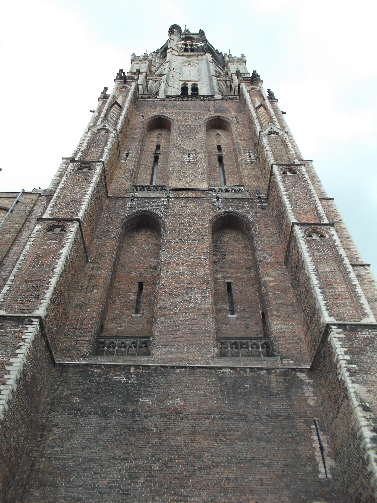
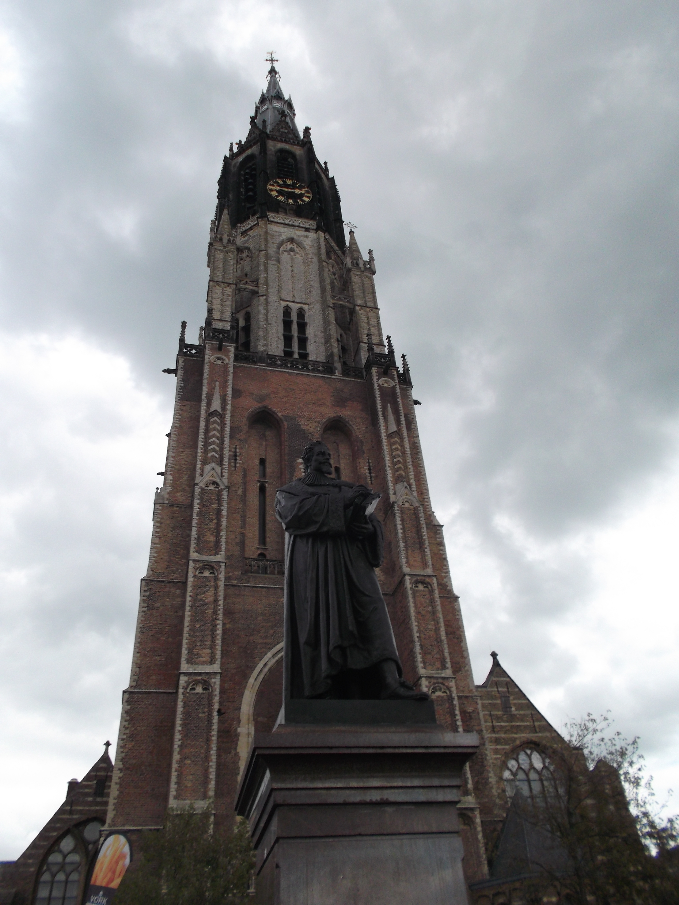
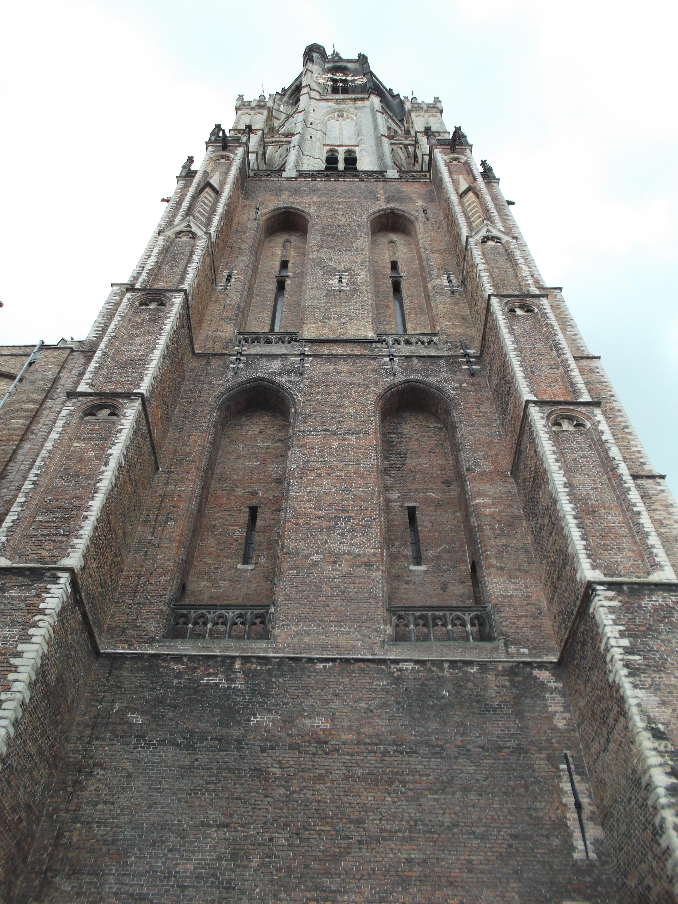
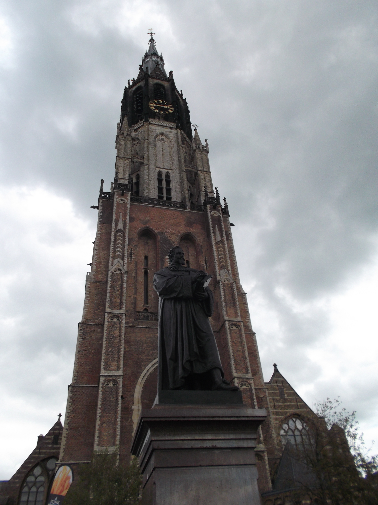

Flower photography
I live in the beautiful city of Delft, rich in history and culture. I love wandering through the small streets, looking up at the church towers and wondering what people felt like a few hundred years ago when they looked up to the tower. These photos show some scenery from the city centre of Delft, as well as some pictures of the two most bad-ass buildings in the whole center: The New Church and the old courthouse, which doubled as a prison. Enjoy!
 




Finally I walked past this cute tourist bench in the Delft Blue style that became world-famous in the 17th century. It looks very nice :)